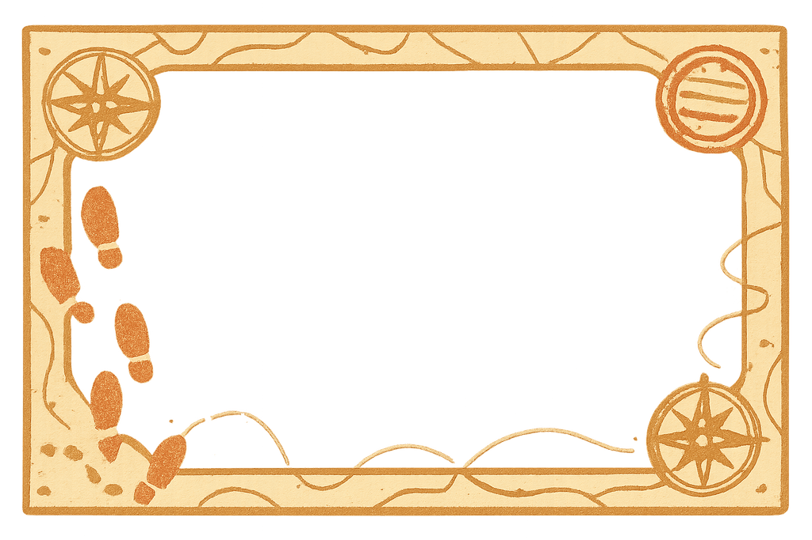
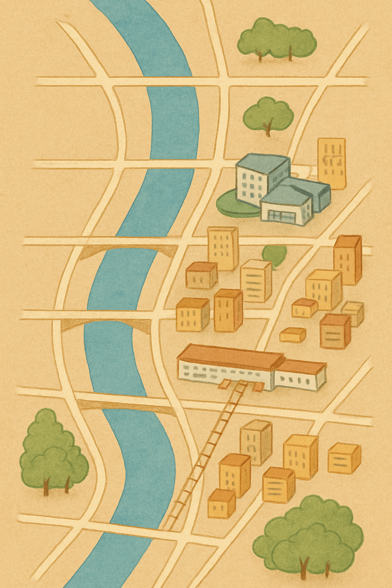
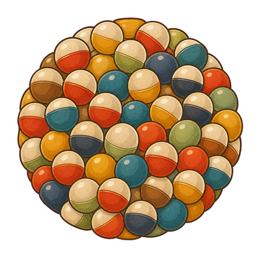
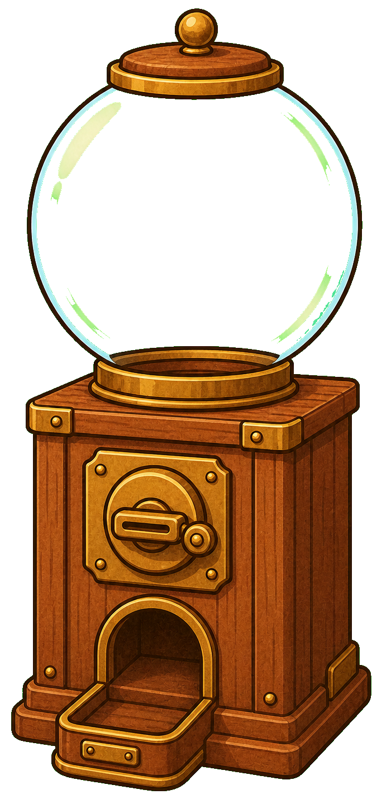
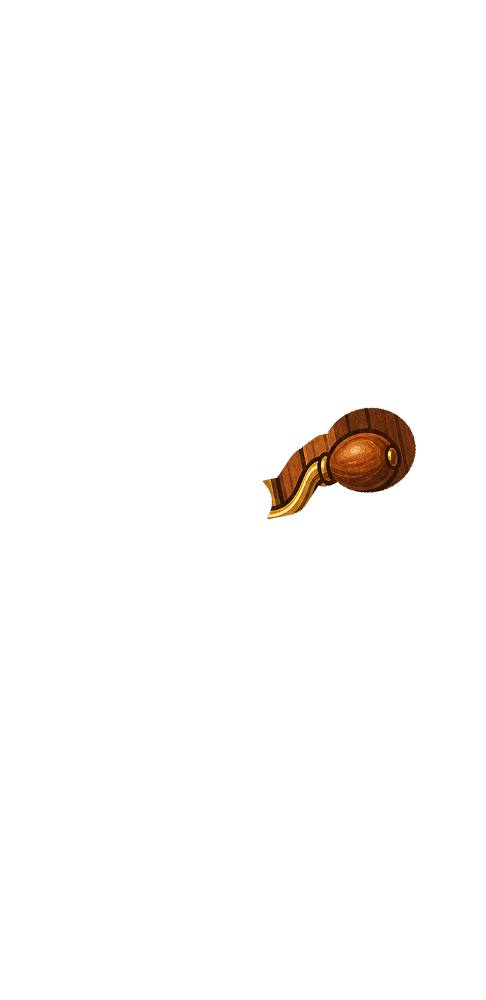
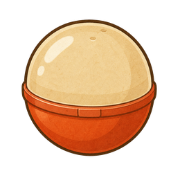

ながおか探検録
NAGAOKA EXPLORATION LOG
今日はどこへ探検に行こうか！
称号：みならい探検家
Lv 10 / 50 XP
最寄りのスポット
現在地を取得中…
-
未発見
🏕️ 探検隊の拠点
留守の間も隊員がコインを集めてくれます
たまっているコイン：0 / 0
隊員 1人（採取 +15/時）
倉庫 Lv1（貯蔵 4時間）
🗺️ お宝
🏪 お店

ピンをタップすると詳細が見られます
図鑑
実績
称号
おみやげ
花火館
発見数：0 / 0
アイテム
衣装だんす
🧭 ワープ（遠くのスポットへ）
遠くて行けないスポットへ、1000コインでワープして訪れます。発見や再訪（ガチャ）ができます。※ワープで手に入れたお宝カードには通し番号（発見順）は付きません。現地で発見したカードだけに番号が付きます。
空いている
やや混雑
混雑
現在地から近い順に並んでいます
たんけん者の名前
ここで決めた名前で、ホーム画面のキャラが「こんにちは、〇〇さん！」と話しかけます。
みための設定
選んだ見た目がホーム・タイトルのキャラに反映されます。（衣装を着ているときは衣装が優先されます）
効果音
ON
OFF
発見・レベルアップ・実績解除・お買い物などのタイミングで短い効果音を鳴らします。
データ
書き出したJSONファイルを保管しておくと、機種変更時などにデータを復元できます。
加盟店の方へ
押すと申請フォームが開きます。お店の掲載・特典・写真などをご記入ください。
このアプリについて
位置情報や進捗は基本的に端末内（localStorage）で処理・保存します。お宝カードの通し番号や友達紹介の機能では、端末ごとに自動発行される匿名IDと、発見したスポットのID・日時のみを外部（Firebase）へ送信します。氏名などの個人情報は送信しません。
現在：中心部・摂田屋・山古志・寺泊・栃尾・与板・越路・蓬平の8地区、42スポット対応。ショップ・実績・称号・デイリーストリーク・衣装だんすに対応。
マップには「お宝」に加えて地域の加盟店（お店）ピンも表示されます（フェーズA・デモ実装）。お店の近くではクーポンの利用も試せます。
ホーム画面に追加するとアプリのように起動でき、一度読み込めばオフラインでも使えます。
現在：中心部・摂田屋・山古志・寺泊・栃尾・与板・越路・蓬平の8地区、42スポット対応。ショップ・実績・称号・デイリーストリーク・衣装だんすに対応。
マップには「お宝」に加えて地域の加盟店（お店）ピンも表示されます（フェーズA・デモ実装）。お店の近くではクーポンの利用も試せます。
ホーム画面に追加するとアプリのように起動でき、一度読み込めばオフラインでも使えます。
運営者・規約
運営：ながおか探検録製作委員会（岡雅俊）
お問い合わせ：aburalabo@gmail.com
アプリ利用者（プレイヤー）の利用は無料です。以下の有料の記載は加盟店（店舗）向け掲載サービスに関するものです。
加盟店プラン・料金 / 特定商取引法に基づく表記 / 加盟店利用規約 / プライバシーポリシー
お問い合わせ：aburalabo@gmail.com
アプリ利用者（プレイヤー）の利用は無料です。以下の有料の記載は加盟店（店舗）向け掲載サービスに関するものです。
加盟店プラン・料金 / 特定商取引法に基づく表記 / 加盟店利用規約 / プライバシーポリシー
発見！
🎁 友達をさそう
友達を紹介すると、友達はボーナスコイン、あなたは紹介人数が増えて称号がもらえます。
あなたの紹介コード
…
友達に教えてね。友達がこのコードを入力して、現地で最初のカードを取ると成立します。
友達のコードを入力（はじめての人だけ）
あなたの紹介人数：- 人
ログインボーナス！
Day 1 / 7
🎰 ここでガチャ




ボタンを押して回そう！
🧭 ワープ先を選ぶ
1000コインで、その場所へワープして訪れます（通し番号は付きません）